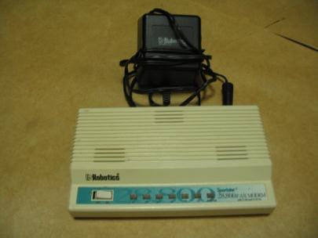
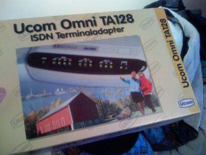
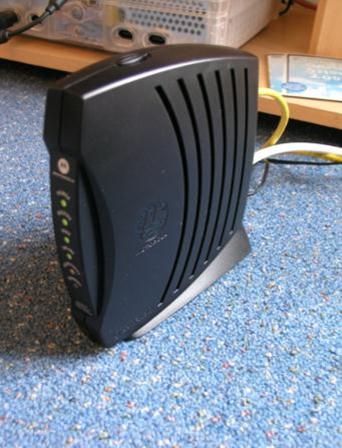
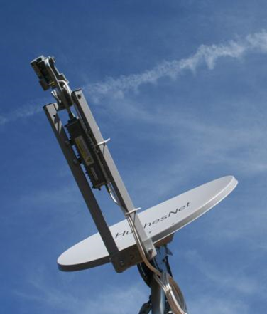

PCH15-Introduction to Wireless Networking <<
Previous Next >> 40923253 UNIT 5 Page 121~132
PCH16-Internet Connectivity
Internet Connectivity
Overview
In this module, we will discuss the various types of Internet connectivity for networks. Essentially, this connectivity provides our link to the wide area network (WAN). Each type of connection has benefits and drawbacks, so it is important that you, as a technician, understand which WAN connectivity method you should use in a given scenario. Also, we will cover the basic methods of connecting a small office/home office (SOHO) network, to include wireless devices and connection to the Internet.
在本模塊中，我們將討論網絡的各種類型的Internet連接。本質上，這種連通性提供了我們到廣域網（WAN）的鏈接。每種類型的連接都有其優點和缺點，因此，作為一名技術人員，了解在給定方案中應使用哪種WAN連接方法非常重要。此外，我們還將介紹連接小型辦公室/家庭辦公室（SOHO）網絡的基本方法，包括無線設備和與Internet的連接。
Networking Internet Connectivity
learning objective-學習目標
Compare and contrast Internet connection types and features.（比較和對比Internet連接類型和功能）
The oldest method of Internet connectivity is the dial-up network, usually abbreviated as DUN. Dial-up networking uses the public telephone lines using an analog audible signal over the line, which provides a maximum speed of 56 Kbps. The public switched telephone network (PSTN) is made up of multiple telephone carriers from around the world. Analog connections (voice and data) using the PSTN are called plain old telephone service (POTS) connections. To connect to the Internet using POTS, you needed both a modem and a dial-up Internet service provider (ISP) to answer your dial-up call.
最早的Internet連接方法是撥號網絡，通常縮寫為DUN。撥號網絡使用公用電話線，該公用電話線在線路上使用模擬聲音信號，最大速度為56 Kbps。公共交換電話網（PSTN）由來自世界各地的多個電話運營商組成。使用PSTN的模擬連接（語音和數據）稱為普通舊電話服務（POTS）連接。要使用POTS連接到Internet，您需要數據機和撥號Internet服務提供商（ISP）來應答您的撥號電話。
A modem is a device that converts 1s and 0s from their digital state into an audible state that is transferred over a standard telephone line. Modem stands for modulate/demodulate, which is the process of the digital data being converted to/from analog for transmission. Modems can reside in or be connected to computers in multiple ways, including:
數據機是一種將1和0從其數字狀態轉換為可聽狀態的設備，該狀態可通過標準電話線傳輸。數據機代表調製/解調，調製/解調是將數字數據轉換為模擬量/從模擬量轉換為傳輸的過程。數據機可以多種方式駐留在計算機中或連接到計算機，包括：
- Add-on card (like PCI or PCIe)（附加卡 PCI:外部連結標準PCIe:匯流排規格）
- Externally connected by USB and/or serial（通過USB和/或串行外部連接）
- PC card (for laptops)（PC卡（用於筆記本電腦））
- Integrated in the motherboard（集成在主板上）
- Mini-PCI（微型PCI）
- Mini-PCIe card (internal for laptops)（Mini-PCIe卡（筆記本電腦內部））
While dial-up modems were extremely popular at the dawn of the Internet in the 1980s and 1990s, the bandwidth limitation of 56 Kbps quickly become an issue as faster alternatives were sought. Eventually dial-up modems were replaced, and now they are almost nonexistent.
儘管撥號數據機在1980年代和1990年代互聯網興起之初非常受歡迎，但隨著人們尋求更快的替代方案，56 Kbps的帶寬限制迅速成為一個問題。最終，撥號數據機被替換了，現在它們幾乎不存在了。
Dial-up modem. Photo used under CC-BY-NC-ND license from tumonbay.
Integrated services digital network (ISDN) is slightly faster than basic dial-up. ISDN supports multiple 64 Kbps channels over a single connection. These 64-Kbps channels are called bearer channels (B channels). ISDN provides faster speeds than dial-up, usually at 128 Kbps, and also provides an “always on” connection, instead of “on demand” (like dial-up service). ISDN was a popular alternative to DUN in the 1980s for government, corporate, and educational networks, but was too cost prohibitive for the consumer market. ISDN was one of the first “high-speed” options available to carry voice, video, or data. ISDN requires an ISDN terminal adapter, which can be internal or external and acts like a “modem” for the ISDN circuit. It takes two or more RJ-11 phone lines and binds them together to provide the desired data rate. The primary rate interface (PRI) has a maximum speed of 1.536 Mbps, but the most common ISDN service is basic rate interface, which provides either 64 Kbps (single) or 128 Kbps (double) rate service. While this is an older technology, ISDN is still entrenched in some of the larger government and educational networks because it is cost prohibitive to remove it entirely. Most entities have moved to broadband solutions such as voice over IP (VoIP) using session initiation protocol (SIP) trunks. In the next session, we will discuss the next generation of broadband data solutions. Currently, Internet protocol video teleconference (IPVT) has become more widespread and cost efficient.
整合服務數位網絡（ISDN）的速度比基本撥號更快。 ISDN通過單個連接支持多個64 Kbps通道。這些64 Kbps通道稱為承載通道（B通道）。 ISDN通常以128 Kbps的速度提供比撥號更快的速度，並且還提供“始終在線”連接，而不是“按需”連接（例如撥號服務）。對於政府，企業和教育網絡，ISDN在1980年代是DUN的一種流行替代方法，但對於消費者市場而言，成本太高了。 ISDN是最早可用於傳輸語音，視頻或數據的“高速”選項之一。 ISDN需要ISDN終端適配器，該適配器可以是內部或外部的，並且充當ISDN電路的“數據機”。它需要兩條或多條RJ-11電話線並將它們綁在一起以提供所需的數據速率。主速率接口（PRI）的最大速度為1.536 Mbps，但是最常見的ISDN服務是基本速率接口，它提供64 Kbps（單速率）或128 Kbps（雙速率）服務。儘管這是一種較舊的技術，但ISDN在某些較大的政府和教育網絡中仍然根深蒂固，因為完全刪除它的成本高昂。大多數實體已轉向使用會話發起協議（SIP）中繼的IP語音（VoIP）等寬帶解決方案。在下屆會議上，我們將討論下一代寬帶數據解決方案。當前，互聯網協議視頻電話會議（IPVT）已經變得更加普及和具有成本效益。

Ucom Omni TA128 ISDN terminal adapter. Photo used under CC-BY-NC-ND license from Martin Bekkelund.
One of the first consumer replacements for dial-up service was the digital subscriber line (DSL). DSL solved the 56.6 Kbps limitation of DUN and effectively began the consumer broadband demand for greater Internet speeds. DSL utilizes the existing POTS network that already exists at homes and offices and allows the digital signal to piggyback on the normal analog phone line. DSL is referred to as xDSL with two main varieties: asymmetric DSL (ADSL) and symmetric DSL (SDSL). Other variants of xDSL include high-bit-rate DSL (HDSL); symmetric high-speed DSL (SHDSL), which is a form of symmetric DSL; and very-high-bit-rate DSL second-generation (VDSL2), a form of ADSL using combined fiber optics with copper to achieve greater speeds. ADSL provides high-speed Internet with a faster download speed than its upload speed. Download speeds are between 384 Kbps and 24 Mbps, but uploads are only 128 Kbps to 3.3 Mbps. It was marketed to home users and small businesses, who utilize the Internet primarily as a consumption network, downloading much more information than they upload. For example, if you go to a streaming video site and request a video, your request may only be a few hundred kilobytes. But, the video you receive back (download) is several hundred megabytes. This is the typical web surfing pattern of most users, so ADSL worked well for the majority of people.
撥號服務的第一個消費者替代產品是數字用戶線（DSL）。 DSL解決了DUN的56.6 Kbps限制，並有效地開始了消費者寬帶對更高互聯網速度的需求。 DSL利用家庭和辦公室中已經存在的現有POTS網絡，並允許數字信號搭載在普通的模擬電話線上。 DSL被稱為xDSL，主要有兩種：非對稱DSL（ADSL）和對稱DSL（SDSL）。 xDSL的其他變體包括高比特率DSL（HDSL）；對稱高速DSL（SHDSL），是對稱DSL的一種形式；第二種是非常高比特率的DSL（VDSL2），它是一種結合了銅纜和光纖以達到更高速度的ADSL。 ADSL為高速Internet提供比其上載速度更快的下載速度。下載速度介於384 Kbps和24 Mbps之間，而上傳速度僅為128 Kbps至3.3 Mbps。它面向的是家庭用戶和小型企業，他們主要將互聯網用作消費網絡，下載的信息比上傳的信息多得多。例如，如果您訪問流媒體視頻站點並請求視頻，那麼您的請求可能只有幾百千字節。但是，您收到的視頻（下載）為數百兆字節。這是大多數用戶的典型網絡衝浪模式，因此ADSL對於大多數人來說效果很好。
SDSL, on the other hand, matches the download and upload speeds. Since more bandwidth is dedicated to the upload side, speed is lost on the download side. Speed ranges from 384 Kbps to 2 Mbps for both upload and download. This was used heavily in commercial scenarios, where clients need higher upload speeds due to their business models. The biggest disadvantage of xDSL is that it is distance-dependent from the telephone company switching station or central office (CO) — the further from the CO, the greater the attenuation (signal loss) and thus the slower the speed. However, telephone companies (sometimes referred to as telco) are adding DSL loop extenders and combining fiber optics with xDSL to overcome this limitation.
另一方面，SDSL與下載和上傳速度匹配。由於更多的帶寬專用於上載側，因此速度在下載側上損失了。上傳和下載的速度範圍從384 Kbps到2 Mbps。這在商業場景中被大量使用，在商業場景中，客戶由於其業務模型而需要更高的上載速度。 xDSL的最大缺點是，它與電話公司的交換台或中心局（CO）之間的距離取決於-與CO的距離越遠，衰減（信號損耗）越大，因此速度越慢。但是，電話公司（有時稱為telco）正在添加DSL環路擴展器，並將光纖與xDSL組合在一起以克服此限制。
Cable, the second broadband solution for Internet connectivity, developed concurrently with DSL throughout the 1990s. Cable providers, like the telephone companies, had an immense infrastructure of wiring available as the broadband market grew. Remember that early LANs used coaxial cable prior to Ethernet, and the outgrowth to Internet connectivity using this infrastructure was natural. Cable television infrastructure contains both coaxial and fiber-optic cabling, which is called a hybrid fiber-coax (HFC) distribution network. Cable Internet provides homes and businesses with Internet service delivered over the existing coaxial cables in their area at a reasonable rate. Speeds ranging from 15/2 Mbps (download/upload speed) to 60/6 Mbps are now common with cable service, with some companies also adding fiber to their infrastructure, allowing them to achieve speeds greater than 100 Mbps downstream. Updated cable modems (DOCSIS 3.0) combined with wireless router specifications (AC3200) play an important role in achieving the package speeds Internet service providers (ISPs) advertise to their customers. Like xDSL, cable broadband has its own unique disadvantages. Specific frequency ranges are used for upstream (uploading) and downstream (downloading) data transmission, and all customers share a single hybrid fiber-coax hub, which means that bandwidth speeds fluctuate throughout the day during peak times when many neighbors are online. Fiber-optic and DSL networks do not suffer from this inconsistent data stream. Further, many companies are beginning to cap data usage and bill customers for over-usage. This can cause low speed during peak usage times, whereas true fiber and DSL networks provide a steady service capability that cable cannot.
電纜是第二個用於Internet連接的寬帶解決方案，在整個1990年代與DSL同時開發。像電話公司一樣，電纜提供商也隨著寬帶市場的增長而擁有龐大的佈線基礎設施。請記住，早期的LAN先於以太網使用同軸電纜，並且使用此基礎架構向Internet連接的擴展自然而然。有線電視基礎設施同時包含同軸電纜和光纖電纜，這稱為混合光纖同軸（HFC）分配網絡。 Cable Internet為家庭和企業提供合理的速率，通過其所在地區的現有同軸電纜提供Internet服務。電纜服務現在的速度範圍從15/2 Mbps（下載/上傳速度）到60/6 Mbps，一些公司還向其基礎架構中添加了光纖，從而使下行速度達到了100 Mbps以上。更新的電纜調製解調器（DOCSIS 3.0）與無線路由器規範（AC3200）的結合在實現Internet服務提供商（ISP）向其客戶做廣告的打包速度方面起著重要作用。像xDSL一樣，有線寬帶也有其獨特的缺點。特定的頻率範圍用於上游（上傳）和下游（下載）數據傳輸，並且所有客戶共享一個混合光纖同軸集線器，這意味著在許多鄰居在線的高峰時段，帶寬速度全天都會波動。光纖和DSL網絡不會受到這種不一致的數據流的影響。此外，許多公司開始限制數據使用量並向客戶收取過度使用費用。這可能會在高峰使用時間內導致低速運行，而真正的光纖和DSL網絡提供了電纜無法提供的穩定服務能力。

Cable modem. Photo used under CC-BY-SA license from Paul Boxley.
The newest broadband solution providing Internet connectivity to homes and businesses is the fiber-optic network. A great example of this is Fios from Verizon, although Google Fiber is now entering this market, as well. In these networks, the company provides a fiber-optic cable to your residence or office that is terminated in a fiber-optic modem. This utilizes light over a long piece of glass cabling to provide the signal to and from the data centers. Service is exceptionally good, with very high speeds of up to 150 Mbps downloads or more. Upload speeds can also be extremely fast, reaching 35 Mbps or higher.
提供到家庭和企業Internet連接的最新寬帶解決方案是光纖網絡。一個很好的例子是Verizon的Fios，儘管Google Fiber現在也正在進入這個市場。在這些網絡中，公司為您的住宅或辦公室提供了一條光纖電纜，並以光纖調製解調器端接。這利用了較長的玻璃電纜上的光來提供往返數據中心的信號。服務異常出色，下載速度高達150 Mbps或更高。上傳速度也可以非常快，達到35 Mbps或更高。

Glass fibers. Photo used under CC-BY license from Roshan Nikam.
A major disadvantage all the aforementioned broadband solutions share is availability in rural and small towns where the infrastructure does not exist. In spite of the FCC’s Connecting America: The National Broadband Plan, developed as directed under the American Recovery and Reinvestment Act of 2009, there are still many areas in the United States and throughout the world that lack Internet access. Therefore, a satellite WAN connection might be an option for those requiring faster Internet service but who lack the infrastructure to receive it from the telephone or cable companies. Satellite Internet can provide fast speeds like a DSL modem, but contains low bandwidth usage limits with high costs for over-the-limit usage. Satellite tends to be an expensive option in comparison to cable and DSL service, but is often the only option in remote areas. There are two potential design problems that should be considered when using satellite service: delay and weather conditions. First, the service provided by satellite has a high delay and lag time compared to more traditional Internet options. This lag time is because the signal has to travel from your satellite dish to the satellite, then to the ground station, and return through the same path. This travel time requires nearly half a second for a roundtrip to occur, because the satellite is in orbit at 22,000 miles above the earth. Second, the weather can affect your service. Just like when you watch satellite television during a thunderstorm or heavy snow, satellite Internet can be disconnected due to heavy weather conditions.
所有上述寬帶解決方案共享的主要缺點是在不存在基礎設施的農村和小城鎮中的可用性。儘管FCC的“連通美國：國家寬帶計劃”是根據2009年《美國復甦和再投資法案》制定的，但美國和世界各地仍有許多地區缺乏Internet訪問。因此，對於那些需要更快的Internet服務但又缺乏從電話或電纜公司那裡接收Internet的基礎設施的用戶來說，可以使用衛星WAN連接。衛星Internet可以像DSL調製解調器一樣提供更快的速度，但是包含較低的帶寬使用限制以及超限使用的高成本。與電纜和DSL服務相比，衛星往往是昂貴的選擇，但通常是偏遠地區的唯一選擇。使用衛星服務時，應考慮兩個潛在的設計問題：延遲和天氣狀況。首先，與傳統互聯網選項相比，衛星提供的服務具有較高的延遲和延遲時間。該滯後時間是因為信號必須從衛星天線傳播到衛星，然後再傳播到地面站，然後通過同一路徑返回。由於衛星在離地球22,000英里的軌道上運行，因此往返所需的時間將近半秒。其次，天氣會影響您的服務。就像在雷雨或大雪期間觀看衛星電視一樣，由於惡劣的天氣，衛星互聯網可能會斷開連接。

Satellite dish. Photo used under CC-BY license from Alan Levine.
The last broadband solution is Worldwide Interoperability for Microwave Access (WiMAX), which uses microwave towers to provide fixed wireless access connectivity similar to Wi-Fi but with a larger geographical coverage connecting directly to metropolitan area networks (MANs). Following the IEEE 802.16 standard, WiMAX operates on a different radio frequency than Wi-Fi and can be used to connect businesses to a MAN as well as individual subscribers to the Internet through an ISP. Providing up to 70 Mbps, WiMAX can provide coverage to rural areas, like satellite does, but at a lesser cost and with more reliability. Distance is another factor, because within three miles (nearly five kilometers) users can connect using a wireless WiMAX device similar to a Wi-Fi access point, but greater than that distance requires a “line of sight” antenna.
最新的寬帶解決方案是全球微波訪問互操作性（WiMAX），它使用微波塔提供類似於Wi-Fi的固定無線訪問連接，但是地理覆蓋範圍更大，可以直接連接到城域網（MAN）。遵循IEEE 802.16標準，WiMAX的工作頻率與Wi-Fi的無線電頻率不同，可用於將企業連接到MAN以及將單個訂戶通過ISP連接到Internet。 WiMAX可以提供高達70 Mbps的速度，可以像衛星一樣向農村地區提供覆蓋，但是成本更低，可靠性更高。距離是另一個因素，因為用戶可以在三英里（近五公里）內使用類似於Wi-Fi接入點的無線WiMAX設備進行連接，但距離超過該距離則需要“視線”天線。
The WiMAX Forum is a consortium comprised of industry leaders dedicated to ensure compatibility and interoperability within the specification. WiMAX is leveraged to serve municipalities and specialized communication structures such as the Aeronautical Mobile Airport Communications System (AeroMACS).
WiMAX論壇是一個由行業領導者組成的聯盟，致力於確保規範內的兼容性和互操作性。 WiMAX被用於服務市政當局和專用通信結構，例如航空移動機場通信系統（AeroMACS）。
Another option for Internet connectivity, and by far the newest for mobile Internet connectivity, is cellular networks. In order to access the cellular network, you must use a cellular modem. Cellular modems come in a variety of models, including internal (mini PCIe) cards for laptops, USB external modem sticks, and Wi-Fi devices (like cellphones or MiFi units). Cellular modems operate at speeds up to 4G (100 Mbps) wherever cellular service exists. If 4G is not available, the cellular modems are backward compatible with the older networks such as 3G at 800 Kbps and 2G at 56 Kbps speeds.
蜂窩網絡是Internet連接的另一種選擇，也是迄今為止最新的移動Internet連接。為了訪問蜂窩網絡，必須使用蜂窩調製解調器。蜂窩調製解調器有多種型號，包括用於筆記本電腦的內部（微型PCIe）卡，USB外部調製解調器棒和Wi-Fi設備（例如手機或MiFi設備）。蜂窩調製解調器在任何存在蜂窩服務的地方都可以高達4G（100 Mbps）的速度運行。如果無法使用4G，則蜂窩調製解調器將與較早的網絡向後兼容，例如800 Kbps的3G和56 Kbps的速度的2G。
Smartphones can now be turned into wireless hotspots through tethering. With tethering, the phone acts like a cellular modem for a tablet or computer. You can connect devices to the cell phone through Bluetooth, Wi-Fi, or the USB port and then out to the Internet through the cellular network. The only requirement is that the smartphone has Wi-Fi capability.
現在，可以通過網絡共享將智能手機變成無線熱點。通過網絡共享，電話就像平板電腦或計算機的蜂窩調製解調器一樣。您可以通過藍牙，Wi-Fi或USB端口將設備連接到手機，然後通過蜂窩網絡連接到Internet。唯一的要求是智能手機必須具有Wi-Fi功能。
Due to the underlying infrastructure, 4G data speed is significantly greater than 3G. Until 2015, the infrastructure was either mobile WiMax or LTE. Mobile WiMAX was adopted by Sprint, Intel, and other industry leaders to be the next generation for cellular carriers. While some mobile carriers invested and developed access through mobile WiMAX, others backed 4G LTE, which progressed from the Global System for Mobile Communications (GSM) standard. Both standards, as with all cellular networking, are incredibly sensitive to distance from carrier towers. As of March 2016, Mobile WiMAX lost the backing of Sprint when they shut down their mobile WiMAX network, and it appears that LTE will be the infrastructure supporting 4G.
由於具有基礎架構，因此4G數據速度明顯高於3G。直到2015年，基礎設施還是移動WiMax或LTE。移動WiMAX被Sprint，英特爾和其他行業領導者採用，成為蜂窩運營商的下一代產品。一些移動運營商通過移動WiMAX投資並開發了接入服務，而其他移動運營商則支持從全球移動通信系統（GSM）標準發展而來的4G LTE。與所有蜂窩網絡一樣，這兩個標準對與運營商塔樓的距離都非常敏感。截至2016年3月，移動WiMAX在關閉其移動WiMAX網絡時失去了Sprint的支持，並且看來LTE將成為支持4G的基礎架構。
A standard under development and expected to be released sometime in the early 2020s is 5G. The premise of this standard is that Internet connectivity has become more of a requirement than a luxury. Although the cellular market has moved away from mobile WiMAX, the infrastructure is still available throughout the world for fixed wireless. The Internet of things (IoT) is a phrase used to describe the convergence that is taking place now in the 21st century, when any and all capable devices will be connected to the Internet. From smart homes and their subsystems, to appliances, to automobiles with Wi-Fi and GPS, users will be deriving benefits from broadband technologies and “always on” connectivity. The 5G standard and other major initiatives in the fiber-optic and Wi-Fi industries are promising to move toward that end. Groups such as the WiMAX Forum and many other industry leaders are heavily investing in bringing together device connectivity under the IoT umbrella.
5G是正在開發中的標準，預計將在2020年代初發布。該標準的前提是，Internet連接已成為一種需求，而非奢侈。儘管蜂窩市場已經脫離了移動WiMAX，但該基礎設施仍在全球範圍內用於固定無線。物聯網（IoT）是一個短語，用於描述21世紀當今正在發生的融合，屆時，任何功能強大的設備都將連接到Internet。從智能家居及其子系統，到家用電器，再到具有Wi-Fi和GPS的汽車，用戶將從寬帶技術和“始終在線”的連接中受益。光纖和Wi-Fi行業中的5G標準和其他主要舉措有望朝著這一目標邁進。 WiMAX論壇等組織和許多其他行業領導者正在大力投資，以在IoT框架下整合設備連接性。
As we previously mentioned, both cable and xDSL networks benefit by incorporating fiber into the back end (known as the backhaul ), which increases the overall bandwidth available to the customer. Another major benefit of fiber is its resistance to electromagnetic interference.
如前所述，電纜和xDSL網絡都受益於將光纖集成到後端（稱為回程）中，從而增加了可供客戶使用的整體帶寬。纖維的另一個主要優點是它具有抗電磁干擾的能力。
Setting up a NetWork
learning objective-學習目標
Install, configure, deploy, and test a SOHO wireless/wired router using appropriate settings.（使用適當的設置安裝，配置，部署和測試SOHO無線/有線路由器）
The first and probably the most important step in deploying a wireless network is the planning phase. A site survey is the process of evaluating a network solution to deliver the required coverage, data rates, network capacity, roaming capacity, and quality of service.
部署無線網絡的第一步也是最重要的一步是規劃階段。站點調查是評估網絡解決方案以提供所需覆蓋範圍，數據速率，網絡容量，漫遊容量和服務質量的過程。
Factors that affect the number of access points needed in a building include:
影響建築物所需接入點數量的因素包括：
- The size of the building.（建築物的大小。）
- The number and type of walls in the building and their composition.（建築物中牆壁的數量和類型及其組成。）
- The type of interference or obstructions between stations and the access point.（站點與接入點之間的干擾或障礙類型。）
- The presence of high-voltage equipment (microwaves, power transformers, air-conditioning/heating units, elevators, etc.).（存在高壓設備（微波爐，電源變壓器，空調/加熱裝置，電梯等）。）
- Existing wired and wireless implementations.（現有的有線和無線實現。）
- Bandwidth requirements.（帶寬要求。）
To connect your device to the Internet, you need to have two things. First, you must have an Internet access device (or modem) such as we described in the previous section. This is really dependent on your requirements and the ISP choices where you are located. The Internet service provider (ISP) you choose will determine the type of modem you need and will supply the customer-premises equipment (CPE) for the outside of the building. Next, you must provide your network with a router, which serves as the interconnection point from your local area network clients (LAN) to the ISP external network (WAN).
要將設備連接到Internet，您需要做兩件事。首先，您必須具有上一節所述的Internet訪問設備（或調製解調器）。這實際上取決於您的要求和您所在位置的ISP選擇。您選擇的Internet服務提供商（ISP）將確定所需的調製解調器的類型，並將為建築物的外部提供客戶駐地設備（CPE）。接下來，您必須為網絡提供一個路由器，該路由器用作從局域網客戶端（LAN）到ISP外部網絡（WAN）的互連點。
There are really only 11 steps to set up a small office, home office (SOHO) network:
設置小型辦公室，家庭辦公室（SOHO）網絡實際上只有11個步驟：
- Decide on the type of Internet connection you will use. The ISP you choose will determine the type of modem you need and whether you buy or lease it. For a small office or home office, your most obvious choices will most likely be fiber, cable, or DSL, although a satellite, WiMAX, or cellular connection might be viable.
（確定您將使用的Internet連接類型。您選擇的ISP將確定所需的調製解調器類型以及是否購買或租賃它。對於小型辦公室或家庭辦公室，儘管衛星，WiMAX或蜂窩連接可能可行，但最明顯的選擇很可能是光纖，電纜或DSL。）
- Determine how your workstations, often referred to as clients, will connect to the router. Will you use a wireless access point or wired Ethernet switch?
（確定您的工作站（通常稱為客戶端）如何連接到路由器。您將使用無線接入點還是有線以太網交換機？）
- Choose the modem and router that will support your first two choices.
（選擇將支持您的前兩個選擇的調製解調器和路由器。）
- Set up the account with the ISP. They will come to your location to set up the CPE, including any wiring to the location where you determine the modem is to be placed. Whether you chose to lease or buy your own modem, the ISP usually offers a service to set up the connection between the modem and your LAN router. You also have the option of installing it yourself.
（使用ISP設置帳戶。他們將來到您的位置來設置CPE，包括到您確定要放置調製解調器的位置的任何佈線。無論您選擇租賃還是購買自己的調製解調器，ISP通常都會提供一項服務來建立調製解調器與LAN路由器之間的連接。您也可以選擇自己安裝它。）
- Cable the modem and router together.
（將調製數據機和路由器連接在一起。）
- Configure the router and wireless access point (if used).
（配置路由器和無線訪問點（如果使用）。）
- Connect each client to the network (cabled or wireless) and verify they are working properly.
（將每個客戶端連接到網絡（電纜或無線），並驗證它們是否正常運行。）
- Configure each device to be part of the same workgroup or create a homegroup; this will allow you to configure each client to share resources like printers and file sharing.
（將每個設備配置為同一工作組的一部分或創建一個家庭組；這將允許您配置每個客戶端以共享打印機和文件共享等資源。）
- Set up file and print sharing on each client designating which resources to share.
（在每個客戶端上設置文件和打印共享，以指定要共享的資源。）
- Test each client to verify they can reach the Internet.
（測試每個客戶端以驗證他們可以訪問Internet。）
- Test the resources you shared in step 9 to make sure they are connected. If everything is working, you have an effective, Internet-connected workgroup that can share resources internally, as well.
（測試您在步驟9中共享的資源，以確保它們已連接。如果一切正常，您將擁有一個有效的，與Internet連接的工作組，該工作組也可以在內部共享資源。）
As you can see, step six asks you to configure a wireless router. Watch this video to see more explanation on how to configure a SOHO wireless router.
如您所見，第六步要求您配置無線路由器。觀看此視頻，以了解有關如何配置SOHO無線路由器的更多說明。
影片網址：https://www.youtube.com/watch?v=vPlm2ETkgmc&feature=emb_title
PCH15-Introduction to Wireless Networking <<
Previous Next >> 40923253 UNIT 5 Page 121~132